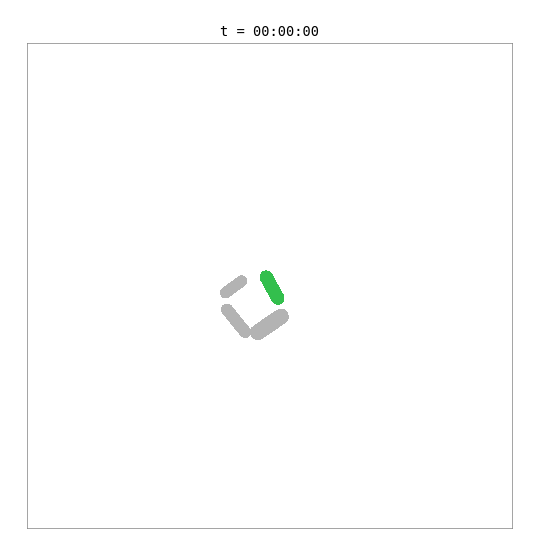
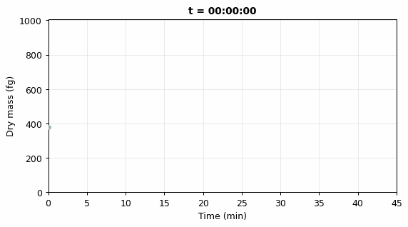
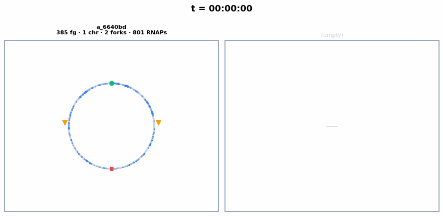

nutrient-growth@5aa3cf7 [uncommitted changes] ·
eranagmon@LT-0919936 ·
Darwin 24.2.0 arm64 (16 cores) ·
Python 3.12.9
This simulation places a whole-cell E. coli model — with 55 biological processes including metabolism, transcription, translation, DNA replication, and chromosome segregation — inside a 2D colony alongside simpler surrogate cells.
Each whole-cell E. coli is implemented as an EcoliWCM process — a
process-bigraph Process that holds an internal Composite connected
via a bridge. The bridge maps external colony ports (mass, length, volume) to internal
whole-cell stores. The whole-cell model (v2ecoli) runs the full mechanistic simulation of
intracellular biology, while the colony framework (pymunk-process) handles spatial physics:
cell body collisions, growth-driven elongation, and division mechanics.
The green cell is the whole-cell E. coli — its length and mass are driven by the internal biological simulation. The grey cells are surrogate cells using a simple adder growth model. When the whole-cell model reaches its division threshold (~702 fg dry mass, ~42 min), the bridge removes the mother cell and adds two daughter cells, each with a fresh copy of the whole-cell model. Daughters are shown with color-shifted variants of the mother’s green.

Each line traces one cell’s dry mass. The thick coloured line is the whole-cell E. coli lineage; thin grey lines are surrogates. When a cell divides its line ends and two daughter lines start at roughly half the mother’s mass, each inheriting a hue-shifted variant of the lineage colour (green family for E. coli, grey for surrogates).

The circular chromosome of each whole-cell E. coli, synchronized with the colony animation above. Chromosome replication initiates around ~23 min, producing 2 chromosomes visible as separate circles. Each frame shows the current number of chromosomes, replication forks, and active RNA polymerases.

| Parameter | Value |
|---|---|
| Duration | 45 min (2700s) |
| Whole-cell E. coli | 1 cell (EcoliWCM bridge, 55 steps) |
| Surrogate cells | 3 (AdderGrowDivide) |
| Environment | 40 × 40 µm |
| Physics interval | 10s |
| WCM update interval | 60s |
| Metric | Value |
|---|---|
| Build time | 0.1s |
| Wall time | 264s (4.4 min) |
| Speed | 10.2× realtime |
| Initial cells | 4 |
| Final cells | 5 |
| Emitter frames | 293 |
Interactive Cytoscape graph of the full colony composite — the multibody physics process, the pressure step, each cell’s internal processes (grow/divide for surrogates, EcoliWCM for the whole-cell E. coli), and the shared stores that wire them together.